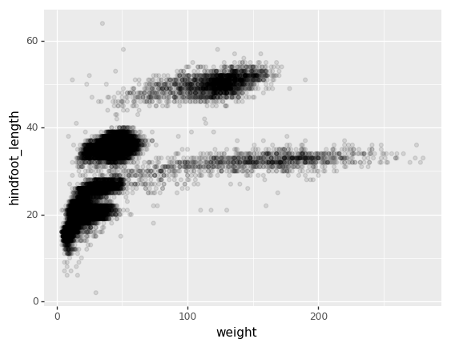
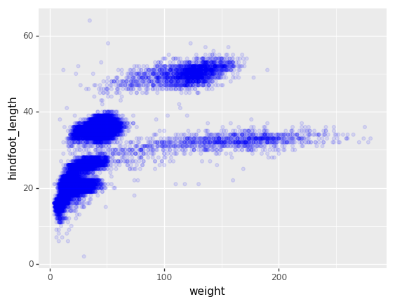
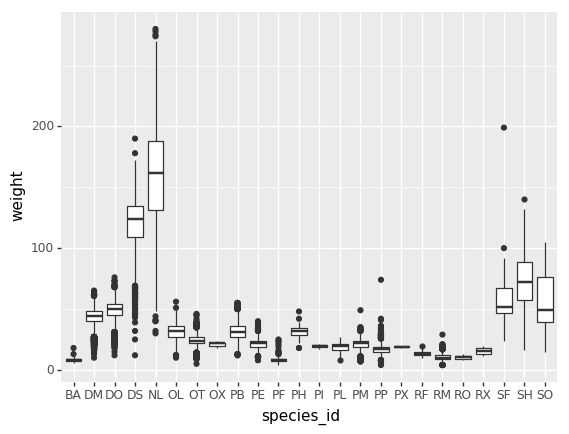
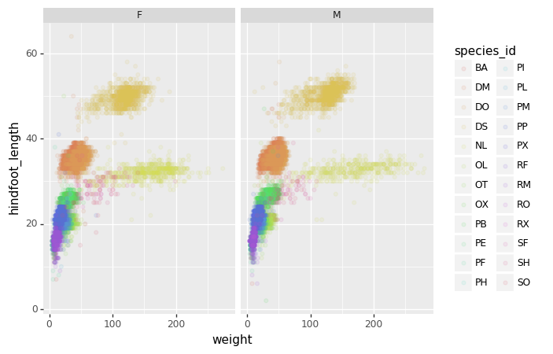
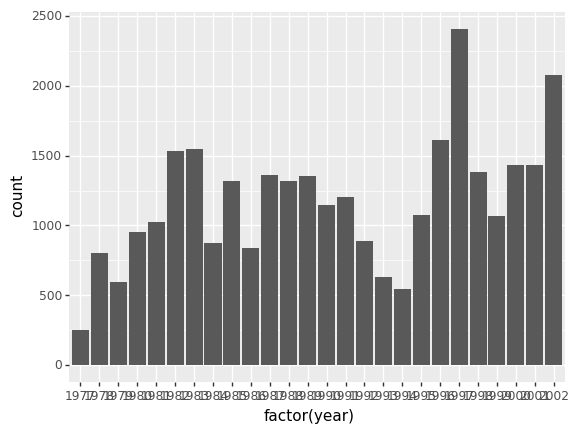
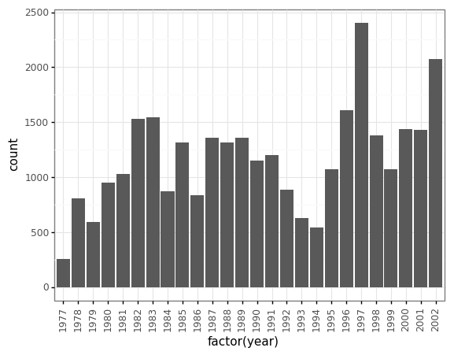
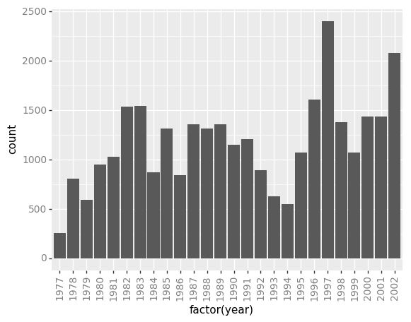

Making Plots With plotnine
Overview
Teaching: 40 min
Exercises: 50 minQuestions
How can I visualize data in Python?
What is ‘grammar of graphics’?
Objectives
Create a
plotnineobject.Set universal plot settings.
Modify an existing plotnine object.
Change the aesthetics of a plot such as color.
Edit the axis labels.
Build complex plots using a step-by-step approach.
Create scatter plots, box plots, and time series plots.
Use the facet_wrap and facet_grid commands to create a collection of plots splitting the data by a factor variable.
Create customized plot styles to meet their needs.
Disclaimer
Python has powerful built-in plotting capabilities such as matplotlib, but for
this episode, we will be using the plotnine
package, which facilitates the creation of highly-informative plots of
structured data based on the R implementation of ggplot2
and The Grammar of Graphics
by Leland Wilkinson. The plotnine
package is built on top of Matplotlib and interacts well with Pandas.
Reminder
plotnineis not included in the standard Anaconda installation and needs to be installed separately. If you haven’t done so already, you can find installation instructions on the Setup page.
Just as with the other packages, plotnine needs to be imported. It is good
practice to not just load an entire package such as from plotnine import *,
but to use an abbreviation as we used pd for Pandas:
%matplotlib inline
import plotnine as p9
From now on, the functions of plotnine are available using p9.. For the
exercise, we will use the surveys.csv data set, with the NA values removed
import pandas as pd
surveys_complete = pd.read_csv('data/surveys.csv')
surveys_complete = surveys_complete.dropna()
Plotting with plotnine
The plotnine package (cfr. other packages conform The Grammar of Graphics) supports the creation of complex plots from data in a
dataframe. It uses default settings, which help creating publication quality
plots with a minimal amount of settings and tweaking.
plotnine graphics are built step by step by adding new elements adding
different elements on top of each other using the + operator. Putting the
individual steps together in brackets () provides Python-compatible syntax.
To build a plotnine graphic we need to:
- Bind the plot to a specific data frame using the
dataargument:
(p9.ggplot(data=surveys_complete))
As we have not defined anything else, just an empty figure is available and presented.
As we have not defined anything else, just an empty figure is available and presented.
- Define aesthetics (
aes), by selecting variables used in the plot andmappingthem to a presentation such as plotting size, shape, color, etc. You can interpret this as: which of the variables will influence the plotted objects/geometries:
(p9.ggplot(data=surveys_complete,
mapping=p9.aes(x='weight', y='hindfoot_length')))
The most important aes mappings are: x, y, alpha, color, colour,
fill, linetype, shape, size and stroke.
- Still no specific data is plotted, as we have to define what kind of geometry
will be used for the plot. The most straightforward is probably using points.
Points is one of the
geomsoptions, the graphical representation of the data in the plot. Others are lines, bars,… To add a geom to the plot use+operator:
(p9.ggplot(data=surveys_complete,
mapping=p9.aes(x='weight', y='hindfoot_length'))
+ p9.geom_point()
)
The + in the plotnine package is particularly useful because it allows you
to modify existing plotnine objects. This means you can easily set up plot
templates and conveniently explore different types of plots, so the above
plot can also be generated with code like this:
# Create
surveys_plot = p9.ggplot(data=surveys_complete,
mapping=p9.aes(x='weight', y='hindfoot_length'))
# Draw the plot
surveys_plot + p9.geom_point()
Challenge - bar chart
Working on the
surveys_completedata set, use theplot-idcolumn to create abar-plot that counts the number of records for each plot. (Check the documentation of the bar geometry to handle the counts)Answers
Notes:
- Anything you put in the
ggplot()function can be seen by any geom layers that you add (i.e., these are universal plot settings). This includes thexandyaxis you set up inaes(). - You can also specify aesthetics for a given
geomindependently of the aesthetics defined globally in theggplot()function.
Building your plots iteratively
Building plots with plotnine is typically an iterative process. We start by
defining the dataset we’ll use, lay the axes, and choose a geom. Hence, the
data, aes and geom-* are the elementary elements of any graph:
(p9.ggplot(data=surveys_complete,
mapping=p9.aes(x='weight', y='hindfoot_length'))
+ p9.geom_point()
)
Then, we start modifying this plot to extract more information from it. For instance, we can add transparency (alpha) to avoid overplotting:
(p9.ggplot(data=surveys_complete,
mapping=p9.aes(x='weight', y='hindfoot_length'))
+ p9.geom_point(alpha=0.1)
)

We can also add colors for all the points
(p9.ggplot(data=surveys_complete,
mapping=p9.aes(x='weight', y='hindfoot_length'))
+ p9.geom_point(alpha=0.1, color='blue')
)

Or to color each species in the plot differently, map the species_id column
to the color aesthetic:
(p9.ggplot(data=surveys_complete,
mapping=p9.aes(x='weight',
y='hindfoot_length',
color='species_id'))
+ p9.geom_point(alpha=0.1)
)
Apart from the adaptations of the arguments and settings of the data, aes
and geom-* elements, additional elements can be added as well, using the +
operator:
- Changing the labels:
(p9.ggplot(data=surveys_complete,
mapping=p9.aes(x='weight', y='hindfoot_length', color='species_id'))
+ p9.geom_point(alpha=0.1)
+ p9.xlab("Weight (g)")
)
- Defining scale for colors, axes,… For example, a log-version of the x-axis could support the interpretation of the lower numbers:
(p9.ggplot(data=surveys_complete,
mapping=p9.aes(x='weight', y='hindfoot_length', color='species_id'))
+ p9.geom_point(alpha=0.1)
+ p9.xlab("Weight (g)")
+ p9.scale_x_log10()
)
- Changing the theme (
theme_*) or some specific theming (theme) elements. Usually plots with white background look more readable when printed. We can set the background to white using the functiontheme_bw().
(p9.ggplot(data=surveys_complete,
mapping=p9.aes(x='weight', y='hindfoot_length', color='species_id'))
+ p9.geom_point(alpha=0.1)
+ p9.xlab("Weight (g)")
+ p9.scale_x_log10()
+ p9.theme_bw()
+ p9.theme(text=p9.element_text(size=16))
)
Challenge - Bar plot adaptations
Adapt the bar plot of the previous exercise by mapping the
sexvariable to the color fill of the bar chart. Change thescaleof the color fill by providing the colorsblueandorangemanually (see API reference to find the appropriate function).Answers
Plotting distributions
Visualizing distributions is a common task during data exploration and
analysis. To visualize the distribution of weight within each species_id
group, a boxplot can be used:
(p9.ggplot(data=surveys_complete,
mapping=p9.aes(x='species_id',
y='weight'))
+ p9.geom_boxplot()
)

By adding points of the individual observations to the boxplot, we can have a better idea of the number of measurements and of their distribution:
(p9.ggplot(data=surveys_complete,
mapping=p9.aes(x='species_id',
y='weight'))
+ p9.geom_jitter(alpha=0.2)
+ p9.geom_boxplot(alpha=0.)
)

Challenge - distributions
Boxplots are useful summaries, but hide the shape of the distribution. For example, if there is a bimodal distribution, this would not be observed with a boxplot. An alternative to the boxplot is the violin plot (sometimes known as a beanplot), where the shape (of the density of points) is drawn.
In many types of data, it is important to consider the scale of the observations. For example, it may be worth changing the scale of the axis to better distribute the observations in the space of the plot.
- Replace the box plot with a violin plot, see
geom_violin()- Represent weight on the log10 scale, see
scale_y_log10()- Add color to the datapoints on your boxplot according to the plot from which the sample was taken (
plot_id)Hint: Check the class for
plot_id. By usingfactor()within theaesmapping of a variable,plotninewill handle the values as category values.Answers
Plotting time series data
Let’s calculate number of counts per year for each species. To do that we need
to group data first and count the species (species_id) within each group.
yearly_counts = surveys_complete.groupby(['year', 'species_id'])['species_id'].count()
yearly_counts
When checking the result of the previous calculation, we actually have both the
year and the species_id as a row index. We can reset this index to use both
as column variable:
yearly_counts = yearly_counts.reset_index(name='counts')
yearly_counts
Timelapse data can be visualised as a line plot (geom_line) with years on x
axis and counts on the y axis.
(p9.ggplot(data=yearly_counts,
mapping=p9.aes(x='year',
y='counts'))
+ p9.geom_line()
)
Unfortunately this does not work, because we plot data for all the species
together. We need to tell plotnine to draw a line for each species by
modifying the aesthetic function and map the species_id to the color:
(p9.ggplot(data=yearly_counts,
mapping=p9.aes(x='year',
y='counts',
color='species_id'))
+ p9.geom_line()
)

Faceting
As any other library supporting the Grammar of Graphics, plotnine has a
special technique called faceting that allows to split one plot into multiple
plots based on a factor variable included in the dataset.
Consider our scatter plot of the weight versus the hindfoot_length from the
previous sections:
(p9.ggplot(data=surveys_complete,
mapping=p9.aes(x='weight',
y='hindfoot_length',
color='species_id'))
+ p9.geom_point(alpha=0.1)
)
We can now keep the same code and at the facet_wrap on a chosen variable to
split out the graph and make a separate graph for each of the groups in that
variable. As an example, use sex:
(p9.ggplot(data=surveys_complete,
mapping=p9.aes(x='weight',
y='hindfoot_length',
color='species_id'))
+ p9.geom_point(alpha=0.1)
+ p9.facet_wrap("sex")
)

We can apply the same concept on any of the available categorical variables:
(p9.ggplot(data=surveys_complete,
mapping=p9.aes(x='weight',
y='hindfoot_length',
color='species_id'))
+ p9.geom_point(alpha=0.1)
+ p9.facet_wrap("plot_id")
)
The facet_wrap geometry extracts plots into an arbitrary number of dimensions
to allow them to cleanly fit on one page. On the other hand, the facet_grid
geometry allows you to explicitly specify how you want your plots to be
arranged via formula notation (rows ~ columns; a . can be used as a
placeholder that indicates only one row or column).
# only select the years of interest
survey_2000 = surveys_complete[surveys_complete["year"].isin([2000, 2001])]
(p9.ggplot(data=survey_2000,
mapping=p9.aes(x='weight',
y='hindfoot_length',
color='species_id'))
+ p9.geom_point(alpha=0.1)
+ p9.facet_grid("year ~ sex")
)
Challenge - facetting
Create a separate plot for each of the species that depicts how the average weight of the species changes through the years.
Answers
Challenge - facetting
Based on the previous exercise, visually compare how the weights of male and females has changed through time by creating a separate plot for each sex and an individual color assigned to each
species_id.Answers
Further customization
As the syntax of plotnine follows the original R package ggplot2, the
documentation of ggplot2 can provide information and inspiration to customize
graphs. Take a look at the ggplot2 cheat sheet, and think of ways to
improve the plot. You can write down some of your ideas as comments in the Etherpad.
The theming options provide a rich set of visual adaptations. Consider the following example of a bar plot with the counts per year.
(p9.ggplot(data=surveys_complete,
mapping=p9.aes(x='factor(year)'))
+ p9.geom_bar()
)

Notice that we use the year here as a categorical variable by using the
factor functionality. However, by doing so, we have the individual year
labels overlapping with each other. The theme functionality provides a way to
rotate the text of the x-axis labels:
(p9.ggplot(data=surveys_complete,
mapping=p9.aes(x='factor(year)'))
+ p9.geom_bar()
+ p9.theme_bw()
+ p9.theme(axis_text_x = p9.element_text(angle=90))
)

When you like a specific set of theme-customizations you created, you can save them as an object to easily apply them to other plots you may create:
my_custom_theme = p9.theme(axis_text_x = p9.element_text(color="grey", size=10,
angle=90, hjust=.5),
axis_text_y = p9.element_text(color="grey", size=10))
(p9.ggplot(data=surveys_complete,
mapping=p9.aes(x='factor(year)'))
+ p9.geom_bar()
+ my_custom_theme
)

Challenge - customization
Please take another five minutes to either improve one of the plots generated in this exercise or create a beautiful graph of your own.
Here are some ideas:
- See if you can change thickness of lines for the line plot .
- Can you find a way to change the name of the legend? What about its labels?
- Use a different color palette (see http://www.cookbook-r.com/Graphs/Colors_(ggplot2))
After creating your plot, you can save it to a file in your favourite format.
You can easily change the dimension (and its resolution) of your plot by
adjusting the appropriate arguments (width, height and dpi):
my_plot = (p9.ggplot(data=surveys_complete,
mapping=p9.aes(x='weight', y='hindfoot_length'))
+ p9.geom_point()
)
my_plot.save("scatterplot.png", width=10, height=10, dpi=300)
Key Points
The
data,aesvariables and ageometryare the main elements of a plotnine graphWith the
+operator, additionalscale_*,theme_*,xlab/ylabandfacet_*elements are added